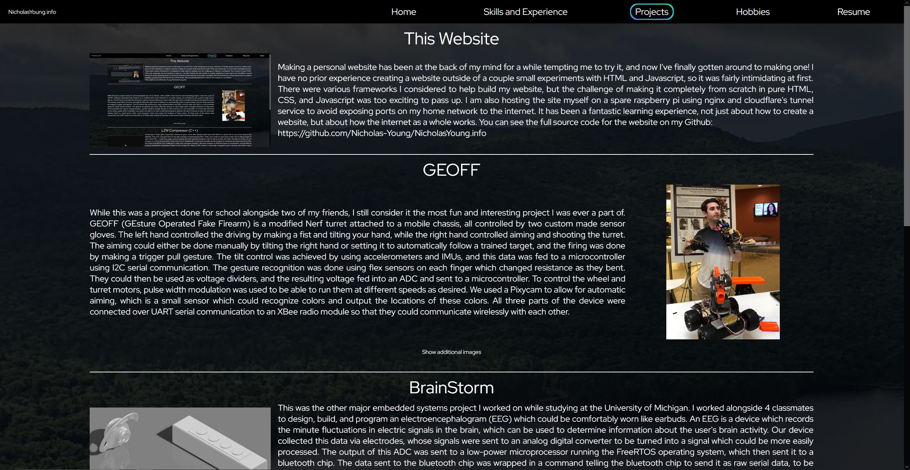

This Website

Making a personal website has been at the back of my mind for a while tempting me to try it, and now I've finally gotten around to making one!
I have no prior experience creating a website outside of a couple small experiments with HTML and Javascript, so it was fairly intimidating at first.
There were various frameworks I considered to help build my website, but the challenge of making it completely from scratch in pure HTML, CSS, and Javascript was too exciting to pass up.
I am also hosting the site myself on a spare raspberry pi using nginx and cloudflare's tunnel service to avoid exposing ports on my home network to the internet.
It has been a fantastic learning experience, not just about how to create a website, but about how the internet as a whole works.
You can see the full source code for the website on my Github:
https://github.com/Nicholas-Young/NicholasYoung.info
https://github.com/Nicholas-Young/NicholasYoung.info